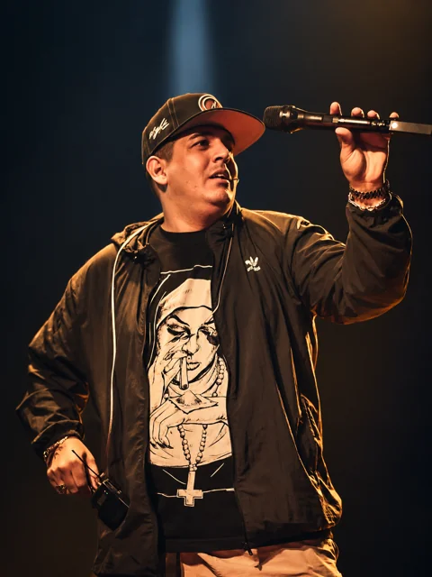

CUMBIA ARGENTINA
ACÁ LLEGA
LA BANDA.
Sound de Barrio, con Joaquín Belondi.
Videos oficiales y sesiones en vivo.
01 / DALE PLAY
ESCUCHÁ SOUND DE BARRIO.
SOUND DE BARRIO × KE PERSONAJES
Fugitivo / Acá Llega
la Banda / Así Fue
Sesión en vivo junto a Ke Personajes.
Escuchar en Spotify ↗02 / VIDEOS Y SESIONES
ESCUCHÁ LO ÚLTIMO.
Y tu te vas, Luna
Video oficial · Última publicación del canal
03 / BIOGRAFÍA
SOUND
DE BARRIO.
Sound de Barrio es el grupo de Joaquín Belondi, de Isidro Casanova, Buenos Aires.
El proyecto empezó junto a Leandro “El Mudo”. Su primera presentación fue en Kori, Pompeya, en una fecha en la que compartieron escenario con Damas Gratis y Ráfaga.
“Persecuta” fue uno de los temas que dio a conocer al grupo. Su repertorio combina canciones propias y versiones, con influencias de la cumbia colombiana y las trompetas como parte del sonido.
Entre sus discos están Bailen Mi Cumbia, Acá Llega la Banda y Re Locos Otra Vez. También grabó con Ke Personajes, Pablito HC y Magoman. En su canal publica videos oficiales y las sesiones Zanateando con Los Pibes.
04 / MATERIAL DE PRENSA
PRESS KIT & GALERÍA.
Fotos originales para prensa, medios y organizadores.
.png){kind=link}

EN VIVO ↓ EN EL ESCENARIO ↓ RETRATO ↓ FOTO DE PRENSA ↓ ESTUDIO ↓ RETRATO ↓ LA MARCA ↓ SOUND DE BARRIO ↓ EN VIVO ↓.png){kind=link}


Cada foto conserva su versión original en la descarga. Descargar biografía breve ↓
05 / CONTACTO
SHOWS Y
CONTRATACIONES.
Consultá disponibilidad, condiciones y producción para tu fecha.
Contrataciones
Contactá a Parulo Producciones a través de su canal público de contrataciones.
Consultar disponibilidad ↗Argentina, Bolivia y Brasil: elegí el contacto correspondiente en la página de la productora.